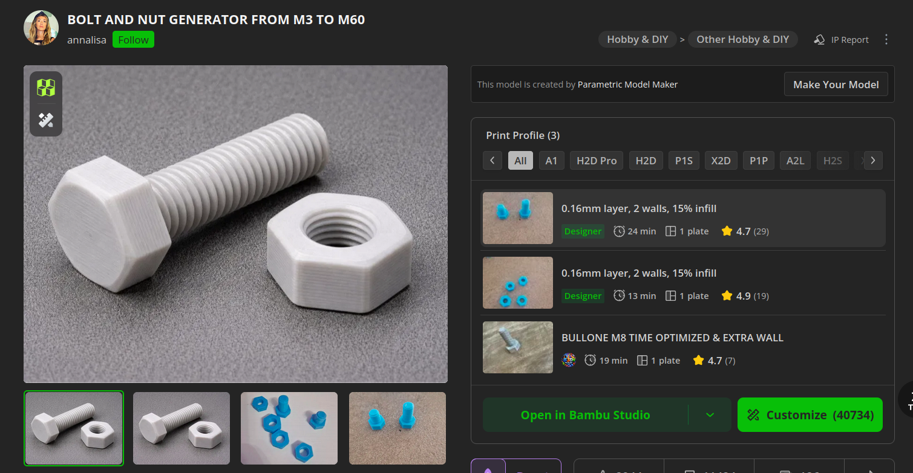

Journal Week 32
Table of Contents
Referencias
2026-08-03
[13:40]
Ya están los soportes para pesas impresos. Mandamos a imprimir una tuerca con 0.2 de toleracnia en lugar de 0.3 para verificar si está bien. El lugar de donde generamos las tuercas y tornillos desde makerworld es:

2026-08-04
[14:43]
Al final vamos a ir con las tuercas originales porque las nuevas quedaban muy ajustadas.